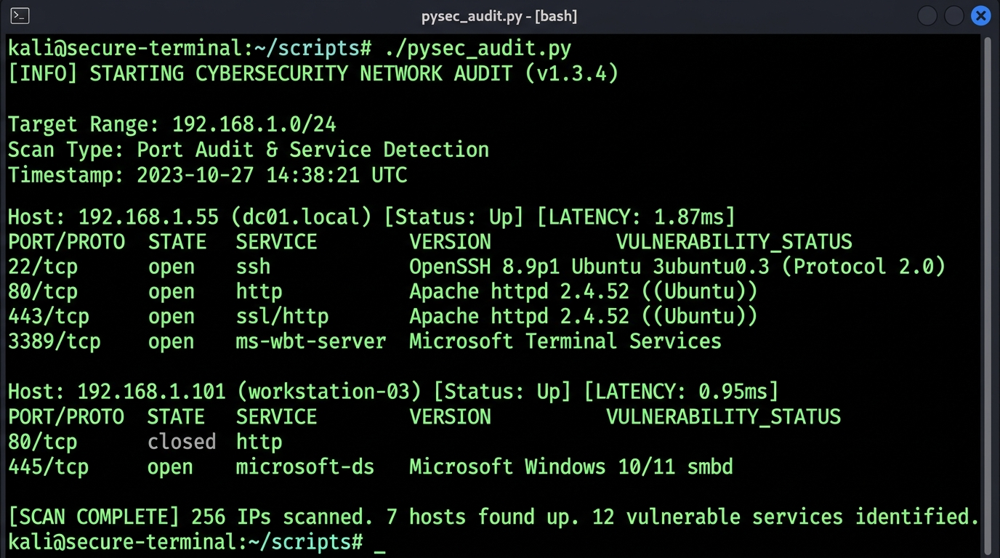
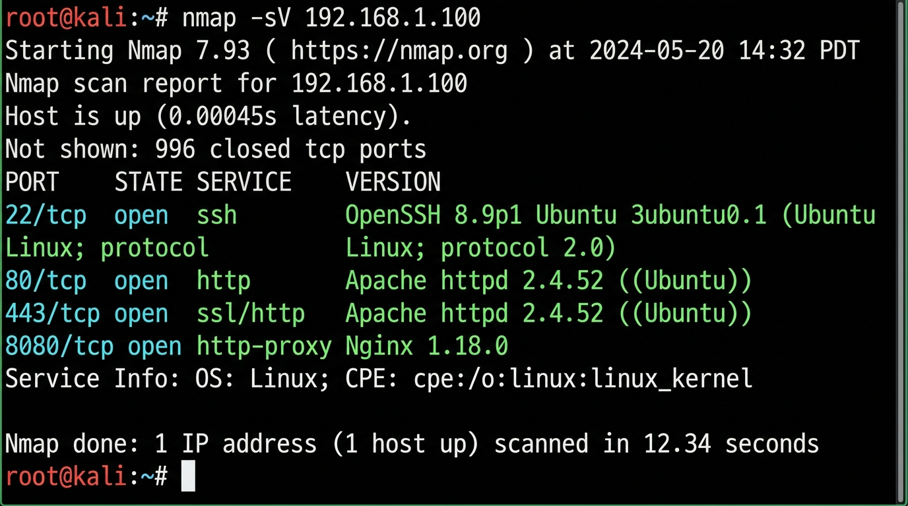
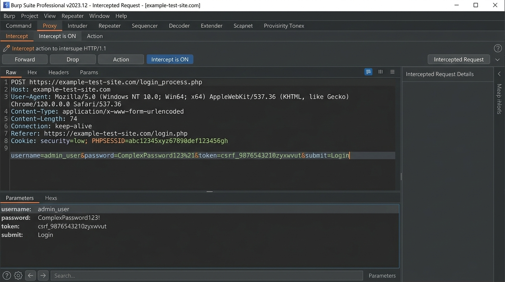
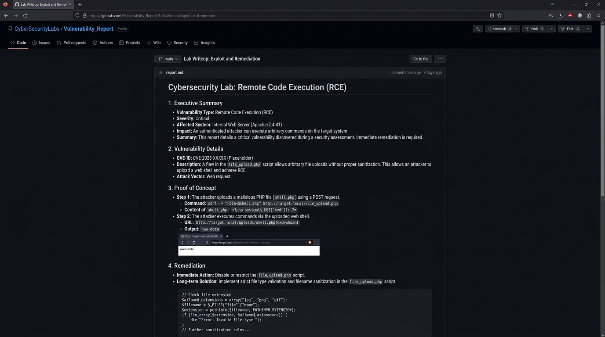

FOUNDATION
Network Security
Networking concepts that support systematic security assessment and troubleshooting.
PENETRATION TESTING ENGINEER · SECURITY PRACTITIONER
Penetration Testing Engineer · Vulnerability Assessment · Web Security
Learning offensive security by understanding how systems work, testing them in authorized environments, and building a strong foundation one step at a time.
01 / About
Penetration testing engineer and Network Engineering student building a strong foundation in offensive security.
I'm Ahmed Mostafa, a penetration testing engineer and Network Engineering student at Fayoum International Technological University. My path into cybersecurity started with networking and computer fundamentals, then grew into a deeper focus on vulnerability assessment and penetration testing.
I enjoy learning how systems fit together, examining how they can fail, and understanding how security controls can be improved. I’m currently developing my skills across web application security, network security, Linux and Windows fundamentals, and hands-on penetration testing practice.
I’m still learning, and that is part of the work: building fundamentals, practicing in authorized labs, documenting what I learn, and steadily taking on more complex security problems.
02 / Technical toolkit
Built around the fundamentals I’m studying and practicing. No percentage scores — just a clear view of my current focus.
Networking concepts that support systematic security assessment and troubleshooting.
Developing a repeatable, evidence-led approach to authorized security testing.
Learning how to analyze application behavior and validate security issues responsibly.
Building confidence with the operating system and command-line tools common in labs.
Studying Windows fundamentals and security concepts relevant to testing environments.
Strengthening Python in particular for security automation, tooling, and future projects.
Skill labels describe current learning emphasis, not a formal proficiency assessment. All practice takes place in authorized environments.
03 / Security arsenal
A working set for labs, network analysis, and application testing — not a claim of expert-level mastery.
Foundational exposure and learning.
Used as part of web-security learning workflows.
Explored in controlled, authorized learning environments.
Building familiarity through structured practice.
04 / Education & Development
Academic study, structured training, and self-directed practice are all part of my path into offensive security.
Academic background that provided a solid foundation in computing, communications, and network infrastructure.
Currently studyingHands-on technical support work that builds practical troubleshooting and user-support experience.
Work experienceOngoing penetration-testing study and practical learning through TryHackMe, web-security labs, and CTF-style environments.
Currently learning / Practical experienceProfessional development track focused on vulnerability analysis and penetration testing.
In progressCybersecurity-related training covering Computer Network Essentials, Switching & Routing, Hacking Techniques, Huawei HCDDA-Tech Essentials, and practical CTF-style learning.
Training backgroundCCNA-oriented networking training that helped build my networking foundation. This is training, not a Cisco CCNA certification.
Training completedNetworking learning through Cisco Networking Academy material, including the Learn-A-Thon 2026 learning milestone.
Learning achievement05 / Credentials
Training is identified as training; certifications are listed only where a credential is confirmed.
Networking certification.
Exam score: 788 / 1000 · Passing score: 700 / 1000AchievedNetworking Academy learning achievement.
AchievementNetworking training / completion. Not represented as an official Cisco CCNA certification.
Training completedAdditional certifications will appear here only after they are earned and verified.
Not yet claimedCoursework and professional-development tracks are shown as training or in progress. They are not presented as certifications unless an earned credential is explicitly confirmed.
06 / Services
Services offered within authorized scope and at my current learning level. Written permission is required before any testing.
Review of authentication, authorization, sessions, and input handling, with validated findings and clear remediation advice.
Reconnaissance, port scanning, and service enumeration to identify exposed services and misconfigurations.
Clear, evidence-based write-ups that explain each issue, its impact, and practical steps to fix it.
Network setup, troubleshooting, and IT support backed by networking training and help-desk experience.
07 / Projects & Hands-on Practice
Authorized environments help me connect fundamentals to real workflows. Below is work from my own labs, with screenshots and write-ups. No rankings, machine counts, or challenge results are claimed.

A small Python utility I wrote to automate a repetitive recon task, running in a clean Kali / Ubuntu terminal.
Educational use only.

Port scanning and service enumeration against an authorized lab target, with notes on what each result means.
Authorized lab environments only.

Intercepting and analyzing an HTTP request while solving a web-security lab, then validating the issue responsibly.
Authorized lab environments only.

A write-up I authored covering methodology, findings, impact, and remediation, published on GitHub.
Written by me, based on authorized labs.
08 / The path so far
A learning journey, not a list of claimed job titles or professional engagements.
The starting point: understanding how systems communicate and how their building blocks fit together.
FoundationStructured study and training to develop networking knowledge.
Training backgroundEarned networking credential, with a score of 788 / 1000.
Credential achievedExpanding from network foundations toward security topics through training and guided exercises.
DevelopingBuilding a structured methodology through current professional development and authorized lab practice.
Current developmentDeepening my focus on applications, authentication, authorization, and security testing.
Current focus09 / A small terminal view
A simple interactive snapshot of my learning path — not scan results or evidence of a penetration test.
ahmed@security-lab:~$ whoami
Ahmed Mostafa — Penetration Testing Engineer
Focus: Penetration Testing · Vulnerability Assessment · Web Security
Personal learning snapshot only. No targets, vulnerabilities, or test outcomes are simulated.
10 / Contact
Open to cybersecurity opportunities, internships, freelance security work, collaboration, and technical projects. Feel free to reach out through any of the channels below.